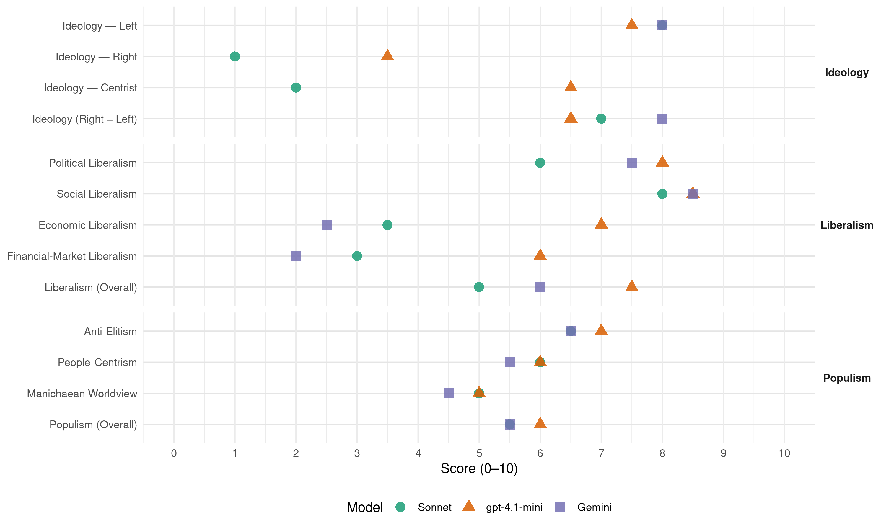

SF (Ireland, 2007)
manifesto_id 53951_200705
Get full text: This site shows derived annotations and short verbatim quotes only. The full manifesto text is © Manifesto Project / WZB — obtain it via manifesto-project.wzb.eu using the manifesto_id above.
Headline scores
| Dimension | Sonnet | gpt-4.1-mini | Gemini |
|---|---|---|---|
| Populism (Overall) | 5.5 | 6.0 | 5.5 |
| Anti-Elitism | 6.5 | 7.0 | 6.5 |
| People-Centrism | 6.0 | 6.0 | 5.5 |
| Manichaean Worldview | 5.0 | 5.0 | 4.5 |
| Ideology (Right − Left) | 7.0 | 6.5 | 8.0 |
| Liberalism (Overall) | 5.0 | 7.5 | 6.0 |
| Political Liberalism | 6.0 | 8.0 | 7.5 |
| Social Liberalism | 8.0 | 8.5 | 8.5 |
| Economic Liberalism | 3.5 | 7.0 | 2.5 |
| Financial-Market Liberalism | 3.0 | 6.0 | 2.0 |
Evidence per dimension
Economic Liberalism
Gemini · score 2.0 · verified · chunk 1
“return Eircom and Aer Lingus to public ownership”
profitable public companies. Actively pursue returning Eircom and Aer Lingus to public ownership. Explore and pursue the possibilities
Gemini · score 3.0 · verified · chunk 2
“oppose importation of cheap meat”
Oppose importation of cheap meat that fails to meet the strict food safety regulations
gpt-4.1-mini · score 7.0 · verified · chunk 1
“support the development of indigenous micro and small and medium enterprises”
Support the development of indigenous micro and small and medium enterprises (SME) and social economy enterprises. Establish an All-Ireland Small Business Task Force to develop an islandwide strategy for the indigenous SME sector.
gpt-4.1-mini · score 7.0 · verified · chunk 2
“Support public and private sector decentralisation from the east coast”
Use an All-Ireland Balanced Regional Development Strategy to end the underinvestment and imbalance in financial support for the development of rural and coastal economies, particularly in the north western and border areas. Support public and private sector decentralisation from the east coast by building the necessary infrastructure for balanced regional development. Create new incentives for investment and implement a public investment programme in the rural areas of highest unemployment.
Sonnet · score 3.0 · verified · chunk 1
“privatisation of essential public utilities”
Our Dáil Team consistently opposed the privatisation of essential public utilities that are vital to a healthy business environment.
Sonnet · score 4.0 · verified · chunk 2
“neo-liberal substance have been expressly rejected”
the proposed EU Constitution and its neo-liberal substance have been expressly rejected and must not be reintroduced by stealth
Financial-Market Liberalism
Gemini · score 2.0 · verified · chunk 1
“highly risky 100% mortgages”
waiting lists or locked into highly risky 100% mortgages they cannot afford, or renting substandard
gpt-4.1-mini · score 6.0 · verified · chunk 1
“tax and royalties”
We raised these demands with the Minister for the Marine and Natural Resources on numerous occasions. We made a comprehensive submission to the Joint Oireachtas Committee on Transport opposing the proposed privatisation of Aer Lingus,
Sonnet · score 3.0 · verified · chunk 1
“mortgage interest rates and professional fees”
monitor changes in house prices, mortgage interest rates and professional fees, support enforcement of snag lists and ensure an end to gazumping.
Sonnet · score 3.0 · verified · chunk 2
“reform of the international financial system”
we would push for reform of the international financial system to strengthen representation of developing countries in international economic decision making
Political Liberalism
Gemini · score 7.0 · verified · chunk 1
“unprecedented democratic opportunities”
unilateral initiative that has opened unprecedented democratic opportunities. Subsequently, Sinn Féin negotiators secured
Gemini · score 8.0 · verified · chunk 2
“fully accountable policing service, imbued with”
Everyone also has the right to a fully accountable policing service, imbued with a human rights ethos
gpt-4.1-mini · score 8.0 · verified · chunk 1
“Dáil debate on this motion”
We published proposals for a Green Paper on Irish Unity, tabled a Dáil motion to this effect and sponsored a full-scale Dáil debate on this motion – the first such debate in decades.
gpt-4.1-mini · score 8.0 · verified · chunk 2
“introduce binding human rights-proofing on all legislation”
We proposed the introduction of binding human rights-proofing, requiring the Human Rights Commission to certify all legislative proposals as compliant with international human rights standards. We proposed to expand the grounds on which discrimination is prohibited under the Equal Status Act and Employment Equality Act to include socio-economic status, political opinion or membership in a trade union and status as a former prisoner. We proposed the introduction of binding human rights-proofing on all legislation.
Sonnet · score 5.0 · verified · chunk 1
“democratic objectives of national self-determination”
a specific strategy to promote and achieve the democratic objectives of national self-determination, Irish territorial reunification, political independence, sovereignty, and national reconciliation.
Sonnet · score 7.0 · verified · chunk 2
“fully accountable policing service, imbued with a human rights ethos”
Everyone also has the right to a fully accountable policing service, imbued with a human rights ethos, and to a justice system
Liberalism (Overall)
Gemini · score 5.0 · verified · chunk 1
“prohibit discrimination on all the following grounds”
Amend employment equality legislation to prohibit discrimination on all the following grounds: race, ethnic origin (including membership
Gemini · score 7.0 · verified · chunk 2
“fully accountable policing service, imbued with”
Everyone also has the right to a fully accountable policing service, imbued with a human rights ethos
gpt-4.1-mini · score 7.0 · verified · chunk 1
“Dáil debate on this motion”
We published proposals for a Green Paper on Irish Unity, tabled a Dáil motion to this effect and sponsored a full-scale Dáil debate on this motion – the first such debate in decades.
gpt-4.1-mini · score 8.0 · verified · chunk 2
“binding human rights-proofing on all legislation”
We proposed the introduction of binding human rights-proofing, requiring the Human Rights Commission to certify all legislative proposals as compliant with international human rights standards. We proposed to expand the grounds on which discrimination is prohibited under the Equal Status Act and Employment Equality Act to include socio-economic status, political opinion or membership in a trade union and status as a former prisoner. We proposed the introduction of binding human rights-proofing on all legislation.
Sonnet · score 4.0 · verified · chunk 1
“reject privatisation of An Post”
Reject privatisation of An Post and ensure it remains as a state asset under public control. Support the further diversification of the rural post office network.
Sonnet · score 6.0 · verified · chunk 2
“human rights and equality protections”
Sinn Féin will continue to press for the fulfilment of the principle of equivalence in human rights and equality protections between the 6 and 26 Counties
Anti-Elitism
Gemini · score 6.0 · verified · chunk 1
“successive Governments run by all the establishment parties”
access to health services are inexcusable. They are an indictment of successive Governments run by all the establishment parties. Many parties now make claims
Gemini · score 7.0 · verified · chunk 2
“establishment parties have failed to effectively address”
Successive Governments led by all the establishment parties have failed to effectively address these issues.
gpt-4.1-mini · score 7.0 · verified · chunk 1
“successive Governments run by all the establishment parties”
They are an indictment of successive Governments run by all the establishment parties. Many parties now make claims about opposing the two-tier health system.
gpt-4.1-mini · score 7.0 · verified · chunk 2
“successive Irish Governments presided over by all the establishment parties”
The current Government refuses to acknowledge the true extent of Garda corruption and the culture of cover-up that prevails in the force. They failed to act in a meaningful way on the findings and recommendations of the five Morris Tribunal reports. Successive Irish Governments presided over by all the establishment parties have failed to make communities safe or produce a coherent and robust approach to prevent crime before it happens.
Sonnet · score 6.0 · verified · chunk 1
“indictment of successive Governments run by all the establishment parties”
The continued inequalities in health and in access to health services are inexcusable. They are an indictment of successive Governments run by all the establishment parties.
Sonnet · score 7.0 · verified · chunk 2
“all the establishment parties have failed”
Successive Governments led by all the establishment parties have failed to make communities safe or produce a coherent and robust approach
Ideology — Centrist
gpt-4.1-mini · score 7.0 · verified · chunk 1
“all-Ireland economic planning”
There is growing support for all-Ireland planning in both the public and private sectors and in civic society. As a result we now see significant practical initiatives with the capacity to improve everyday life for all,
gpt-4.1-mini · score 6.0 · verified · chunk 2
“We want to create strong and sustainable rural communities supported by sustainable rural economies”
in wants to empower rural communities to reach their maximum potential. We want to create strong and sustainable rural communities supported by sustainable rural economies, adequate infrastructure, and equal access to housing and public services. We believe that the means to achieving rural regeneration is through all-Ireland investment and planning underpinned by a commitment to Rural Equality.
Sonnet · score 2.0 · verified · chunk 1
“All parties claim to support peace”
All political parties claim to support peace and unity – Sinn Féin delivers. We will continue to lead in the Peace Process.
Ideology — Left
Gemini · score 8.0 · verified · chunk 1
“funded from general fair and progressive taxation”
free at the point of delivery, on the basis of need alone, and funded from general fair and progressive taxation. We are also proposing fundamental
Gemini · score 8.0 · verified · chunk 2
“grip of the large processors and retailers”
circumvent the grip of the large processors and retailers that squeeze producers’ incomes.
gpt-4.1-mini · score 8.0 · verified · chunk 1
“progressive taxation”
We are committed to eliminate poverty through the progressive achievement of the equitable distribution of the wealth of Ireland amongst the people of Ireland. These objectives require taxation justice,
gpt-4.1-mini · score 7.0 · verified · chunk 2
“We will significantly expand the availability of full-spectrum drug treatment services”
Sinn Féin proposes to take a more serious approach to the drugs crisis than any previous Irish Government. We will dedicate a Minister of State with sole responsibility for pursuing the objectives of the National Drugs Strategy, for fully funding the necessary prevention, education and treatment programmes, and for co-ordinating enforcement action against the illegal drugs trade on an all-Ireland basis. We will significantly expand the availability of full-spectrum drug treatment services including effective harm-reduction measures and eliminate treatment waiting lists, so that all drug users can get the services and supports they need.
Sonnet · score 8.0 · verified · chunk 1
“universal public health system for Ireland”
Sinn Féin proposes a new universal public health system for Ireland that provides care to all free at the point of delivery, on the basis of need alone, and funded from general fair and progressive taxation.
Sonnet · score 8.0 · verified · chunk 2
“social investment in marginalised areas”
This means intensive and systematic social investment in marginalised areas. It means providing intervention and support services
Ideology (Right − Left)
Gemini · score 8.0 · verified · chunk 1
“funded from general fair and progressive taxation”
free at the point of delivery, on the basis of need alone, and funded from general fair and progressive taxation. We are also proposing fundamental
Gemini · score 8.0 · verified · chunk 2
“grip of the large processors and retailers”
circumvent the grip of the large processors and retailers that squeeze producers’ incomes.
gpt-4.1-mini · score 7.0 · verified · chunk 1
“all-Ireland economic planning”
There is growing support for all-Ireland planning in both the public and private sectors and in civic society. As a result we now see significant practical initiatives with the capacity to improve everyday life for all,
gpt-4.1-mini · score 6.0 · verified · chunk 2
“successive Irish Governments presided over by all the establishment parties”
The current Government refuses to acknowledge the true extent of Garda corruption and the culture of cover-up that prevails in the force. They failed to act in a meaningful way on the findings and recommendations of the five Morris Tribunal reports. Successive Irish Governments presided over by all the establishment parties have failed to make communities safe or produce a coherent and robust approach to prevent crime before it happens.
Sonnet · score 7.0 · verified · chunk 1
“progressive taxation”
funded from general fair and progressive taxation. We are also proposing fundamental re-orientation of the health system.
Ideology — Right
gpt-4.1-mini · score 3.0 · verified · chunk 1
“stringent labelling of all food products”
We will support the extension of organic farming, which currently constitutes a very small part of overall production despite the clear demand for such produce and higher-than-average incomes earned by organic farmers catering for either the domestic or export market.
gpt-4.1-mini · score 4.0 · verified · chunk 2
“Oppose importation of cheap meat that fails to meet the strict food safety regulations”
Oppose importation of cheap meat that fails to meet the strict food safety regulations imposed here. Establish an all-Ireland CAP Reform Review Group to conduct bi-annual reviews for anomalies and unfair outcomes. Work towards single representation of Ireland in trade talks to allow stronger future negotiations at EU and WTO level.
Sonnet · score 1.0 · verified · chunk 1
“reintegration of our nation”
leading us closer than ever before to the reintegration of our nation. All political parties claim to support peace and unity – Sinn Féin delivers.
Sonnet · score 1.0 · verified · chunk 2
“all-Ireland policing service”
We are working towards the establishment of an all-Ireland policing service. In the interim, we are proposing fundamental Garda reform
Manichaean Worldview
Gemini · score 4.0 · verified · chunk 1
“allowed the super-rich to skim off”
redistributed wealth in favour of the alreadywealthy. They have allowed the super-rich to skim off the rest of us. They have also
Gemini · score 5.0 · verified · chunk 2
“betrayal of the world’s poorest”
unjustifiable, and constitutes a betrayal of the world’s poorest. All the political parties claim
gpt-4.1-mini · score 5.0 · mixed · chunk 1
“British collusion in murders”
We backed the demands of Justice for the Forgotten and the family of Cllr. Eddie Fullerton, among others, for the truth about British collusion in murders in this State.
gpt-4.1-mini · score 5.0 · verified · chunk 2
“heighten Irish complicity in human rights violations and compromise neutrality”
The cumulative effect of these decisions has been to heighten Irish complicity in human rights violations and compromise neutrality to an unprecedented extent. Despite the genuine commitment of the Irish people to help Make Poverty History, the UN Millennium Development Goals on global poverty reduction by 2015 have not been a central objective of the current Irish Government.
Sonnet · score 4.0 · verified · chunk 1
“Only Sinn Féin has a credible plan”
Many parties now make claims about opposing the two-tier health system. But only Sinn Féin has a credible plan to establish healthcare on the basis of full equality.
Sonnet · score 6.0 · verified · chunk 2
“scandalously sacrificed since EU accession”
Ireland’s fisheries have been scandalously sacrificed since EU accession in 1973. The deal made under the Common Fisheries Policy
People-Centrism
Gemini · score 5.0 · verified · chunk 1
“the people of the 26 Counties”
positive change. Since we last went before the people of the 26 Counties to seek a mandate in 2004
Gemini · score 6.0 · verified · chunk 2
“respect rural people’s right to participate”
Introduce structures, mechanisms and practices that respect rural people’s right to participate more directly in decisions
gpt-4.1-mini · score 6.0 · verified · chunk 1
“the people of Ireland”
We are committed to eliminate poverty through the progressive achievement of the equitable distribution of the wealth of Ireland amongst the people of Ireland. These objectives require taxation justice,
gpt-4.1-mini · score 6.0 · verified · chunk 2
“Everyone also has the right to a fully accountable policing service”
Justice and Community Safety Sinn Féin believes that every person has the equal right to safety at home and in our communities. Everyone also has the right to a fully accountable policing service, imbued with a human rights ethos, and to a justice system in which they can have confidence.
Sonnet · score 6.0 · verified · chunk 1
“people of Ireland”
committed to eliminate poverty through the progressive achievement of the equitable distribution of the wealth of Ireland amongst the people of Ireland.
Sonnet · score 6.0 · verified · chunk 2
“every person has the equal right to safety”
Sinn Féin believes that every person has the equal right to safety at home and in our communities.
Populism (Overall)
Gemini · score 5.0 · verified · chunk 1
“successive Governments run by all the establishment parties”
access to health services are inexcusable. They are an indictment of successive Governments run by all the establishment parties. Many parties now make claims
Gemini · score 6.0 · verified · chunk 2
“establishment parties have failed to effectively”
Successive Governments led by all the establishment parties have failed to effectively address these issues.
gpt-4.1-mini · score 6.0 · verified · chunk 1
“successive Governments run by all the establishment parties”
They are an indictment of successive Governments run by all the establishment parties. Many parties now make claims about opposing the two-tier health system.
gpt-4.1-mini · score 6.0 · verified · chunk 2
“successive Irish Governments presided over by all the establishment parties”
The current Government refuses to acknowledge the true extent of Garda corruption and the culture of cover-up that prevails in the force. They failed to act in a meaningful way on the findings and recommendations of the five Morris Tribunal reports. Successive Irish Governments presided over by all the establishment parties have failed to make communities safe or produce a coherent and robust approach to prevent crime before it happens.
Sonnet · score 5.0 · verified · chunk 1
“All parties claim to oppose poverty”
All parties claim to oppose poverty and support equality. Only Sinn Féin has brought the Equality Agenda to the centre of all our economic and social policy.
Sonnet · score 6.0 · verified · chunk 2
“all the establishment parties acquiesced in this”
successive Governments led by all the establishment parties acquiesced in this, they have also failed to encourage the development
Social Liberalism